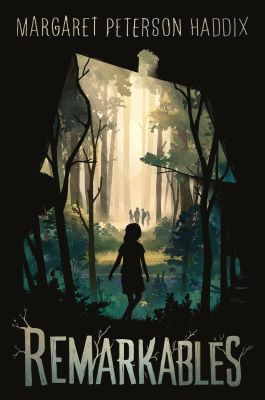
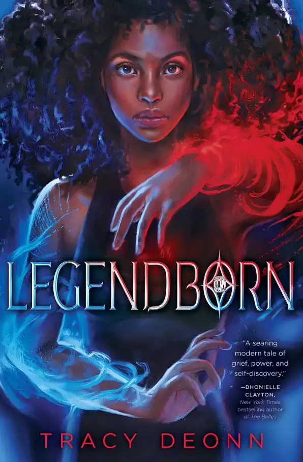

A List Of Awsome Books to read.
🕮 🔖 🕮
Awsome books to read for 12-14 year olds.
1. On Wings of a Dragon.

On Wings of a Dragon is an awesome book that I've read several times.
Written by Cora Tylor.
Yes, it may be a bit confusing at the beginning with each chapter changing from three different
peoples
perspectives (Kour'el, Petaurus and Maighdlin).
But it all becomes clear at the end.
2. Ronia, The Robber's Daughter.

Ronia The Robber's Daughter is amazing! I've also read this book several times.
Written by Astrid Lindgren.
There is adventure and learning how to be independent and living in the wild.
How parents can be enemies but you don't need to be enemies with the child of your parents enemies.
Two people learn how to live together in a cave that's in a forest.
3. Remarkables.
Remarkables is sad/happy and fun and full of adventure.
Written by Margaret Peterson Haddix.
Remarkables is about someone who just moved somewhere new
and she goes to explore the woods and eventually gets to a house that no one
lives in after it was rebuilt from a terrible fire.
Marin is confused because of the teenagers.
They're there..... and then they're... just...
GONE.
She's scared but then she meets Charley.He can see them too!!
What will happen? What are the disappearing teens called? Are Marin and Charley safe?
4. Legendborn.
Legendborn is awsome!!
Written by Tracy Deonn.
There's mystery and adventure, perhaps a little romance.....
Also suspicion, wonder and rivalry.
Bree is trying to figure out what she's seeing, who she is and why and how her mom truly died.
She gets into the Order of The Round Table where she learns that magic exists or what they call aether and
the woman in the black community call root.
Bree figures out who she truly is and wants to help fight with the Round Table. But will they allow her to.......
Don't miss book 2, Bloodmarked!!
5. Daughter of The Deep

Daughter of The Deep is an absolute adventure!!
Written by Rick Riordan.
Have you ever heard of Twenty THousand Leagues Under The Sea?
Well have you ever wondered what happened to the Nautilus? And Captain Nemo's descendants?
Well join Ana Dakkar on her adventure to find the Nautilus, who betrayed Harding-Pencroft Academy and
why the Nautilus killed her parents.
After the betrayal will she be able to trust anyone?
Will Ana and her classmates be safe?
6. Keeper of Thr Lost Cities

Keeper of The Lost Cities is legendary!!
Written by Shannon Messenger
Do you believe in elves?
What would you say if there was an elf that was raised by humans
and when a threat appears in the Forbidden Cities Sophie Foster came to save us?
Sophie is a 12 year old girl
in the Lost Cities when she finds out that there is an entire world of elfs!
And she's one too!!
She finally will be able to control her powers and learn how to use them.
But there is a looming threat: their are elfs that want to kidnap Sophie and figure out
the secrets the Black Swan have stored in her brain.
Sophie shall have to figure out her new powers that she just
manifested to stay one step ahead of the kidnapers and get
back to the Lost Cities...... will she make it?
Don't miss the next books!!
Book 2: Exile
Book 3: Everblaze
Book 4: Neverseen
Book 5: Lodestar
Book 6: Nightfall
Book 7: Flashback
Book 8: Legacy
Book 8.5: Unlocked
Book 9: Stellarlune
7. Trapped in Ice

Trapped in Ice is awsome!
Written by Eric Walters
What ould you do if you were stranded in the Arctic?
Would you like to follow Helen on her adventure on the frozen waters of th Arctic?
Helen's mother is invited to go on a journey through the Arctic ocean and refuses to
leave her son and daughter behind after the recent death of their father.
Helen, her brother and her mom get stranded in the middle of the the Arctic with the rest
of the crew while the boat is trapped in ice and slowly sinking from the ice.